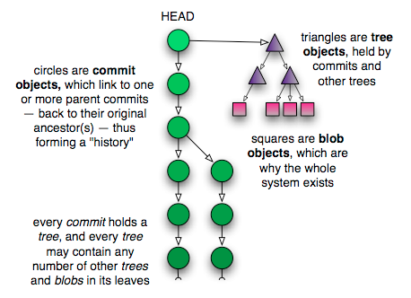

The beauty of commits
Some version control systems make “branches” into magical things, often distinguishing them from the “main line” or “trunk”, while others discuss the concept as though it were very different from commits. But in Git there are no branches as separate entities: there are only blobs, trees and commits. Since a commit can have one or more parents, and those commits can have parents, this is what allows a single commit to be treated like a branch: because it knows the whole history that led up to it.
You can examine all the top-level, referenced commits at any time using the branch command:
$ git branch -v * master 5f1bc85 Initial commit
Say it with me: A branch is nothing more than a named reference to a commit. In this way, branches and tags are identical, with the sole exception that tags can have their own descriptions, just like the commits they reference. Branches are just names, but tags are descriptive, well, “tags”.
But the fact is, we don’t really need to use aliases at all. For example, if I wanted to, I could reference everything in the repository using only the hash ids of its commits. Here’s me being straight up loco and resetting the head of my working tree to a particular commit:
$ git reset --hard 5f1bc85
The –hard option says to erase all changes currently in my working tree, whether they’ve been registered for a checkin or not (more will be said about this command later). A safer way to do the same thing is by using checkout:
$ git checkout 5f1bc85
The difference here is that changed files in my working tree are preserved. If I pass the -f option to checkout, it acts the same in this case to reset --hard, except that checkout only ever changes the working tree, whereas reset --hard changes the current branch’s HEAD to reference the specified version of the tree.
Another joy of the commit-based system is that you can rephrase even the most complicated version control terminology using a single vocabulary. For example, if a commit has multiple parents, it’s a “merge commit” — since it merged multiple commits into one. Or, if a commit has multiple children, it represents the ancestor of a “branch”, etc. But really there is no difference between these things to Git: to it, the world is simply a collection of commit objects, each of which holds a tree that references other trees and blobs, which store your data. Anything more complicated than this is simply a device of nomenclature.
Here is a picture of how all these pieces fit together:
